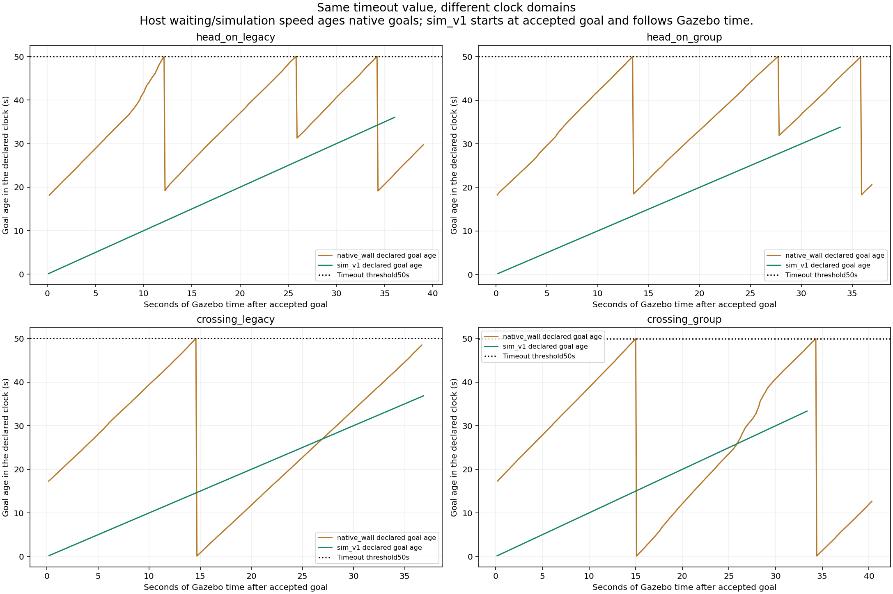
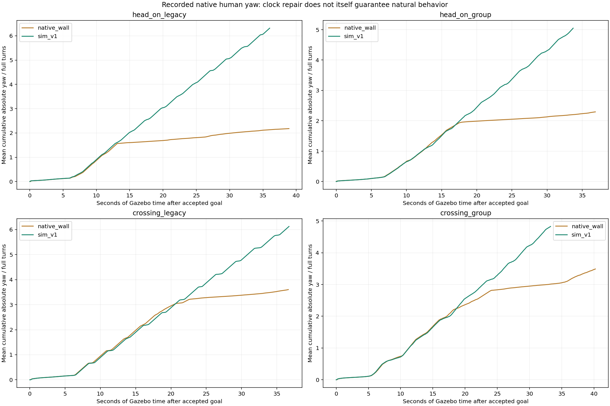
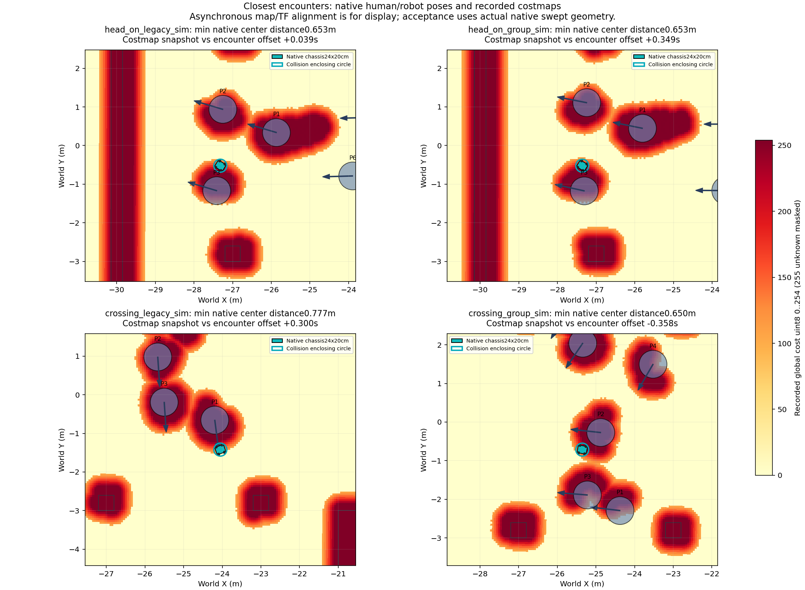

Có bản sửa giữ nhóm và chuyển hướng mới
Chuyển động đạt ngưỡng hai cảnh seed45; một lỗi đóng bridge vẫn giữ audit FAIL.
Xem kết quả mới nhấtThời hạn mục tiêu người theo đồng hồ Gazebo
Đổi riêng đồng hồ hết hạn mục tiêu. Robot, Nav2, ORCA, đội hình khởi tạo và camera giữ nguyên so với vòng gặp gần trước.
Thay đổi đã kiểm tra
Trước:50 giây đồng hồ máy, kể cả lúc chờ. Bản thử:50 giây mô phỏng, bắt đầu ở mốc robot nhận goal Nav2; mục tiêu sau được tính từ lúc native backend gán. Điều kiện tới đích hình học và giới hạn quay không đổi. Không làm mượt yaw để che chuyển động.
266 bài kiểm tra đạt (2 bỏ qua theo điều kiện). Thử backend4 cấu hình với cùng đầu vào robot, hai lịch đồng hồ máy khác nhau: vị trí/hướng người trùng khớp hoàn toàn trong60 bước đầu mỗi cấu hình. Đây là thử thành phần6 giây, không phải nghiệm thu hành vi người.
4/4 lượt tới đích, audit PASS, không recovery; hợp đồng đồng hồ mô phỏng PASS.
Đồng hồ đã tách khỏi tốc độ máy

Đường màu nâu: tuổi mục tiêu của lượt cũ tính theo giây máy. Đường xanh: tuổi mục tiêu của lượt mới tính theo giây Gazebo. Hai loại giây khác nhau; đường ngang50 là cùng giá trị timeout. Việc chờ trước khi nhận goal không làm già mục tiêu mới. Hình vẽ tuổi lớn nhất của6 người; một lần reset có thể không làm đường này giảm nếu nhóm khác còn mục tiêu cũ.
Điều hướng, khoảng hở và chuyển động thực tế

Các cặp có cùng khởi tạo nhưng robot/người phản ứng thật nên quỹ đạo sau đó khác nhau; RNG MPPI không cố định. Sửa đồng hồ không tự động làm ORCA tự nhiên hơn.
Camera ghi thật của bốn lượt mới
Tốc độ:
RGB observer Gazebo1Hz, mã hóa từ GIF gốc và giữ đủ thời gian đứng hình; không dùng AI sinh ảnh. Gait dựng trong cửa sổ replay là chế độ khác.
Footprint và costmap tại lúc tiếp cận gần nhất

Costmap/TF lấy gần thời điểm pose, có độ lệch được ghi trên hình; chỉ dùng minh họa. Kiểm tra khoảng hở dùng riêng các pose world thực tế.
Dấu hiệu ở lớp tránh nhau của nhóm
Trong hai lượt group mới, các vòng bao ảo của nhóm chồng lên nhau ở khoảng62%/69% số mẫu, trong khi thân người vẫn có khoảng hở dương. Ý định vận tốc ORCA còn đổi hơn90° dù mục tiêu không đổi. Đây là chẩn đoán cần kiểm chứng tiếp, không phải kết luận mọi lần quay đều do một nguyên nhân.
Xem phép đo vòng bao và ý định vận tốc nhóm